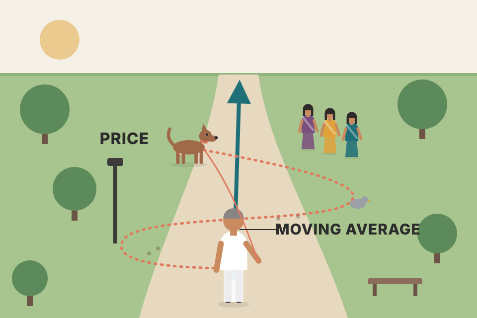
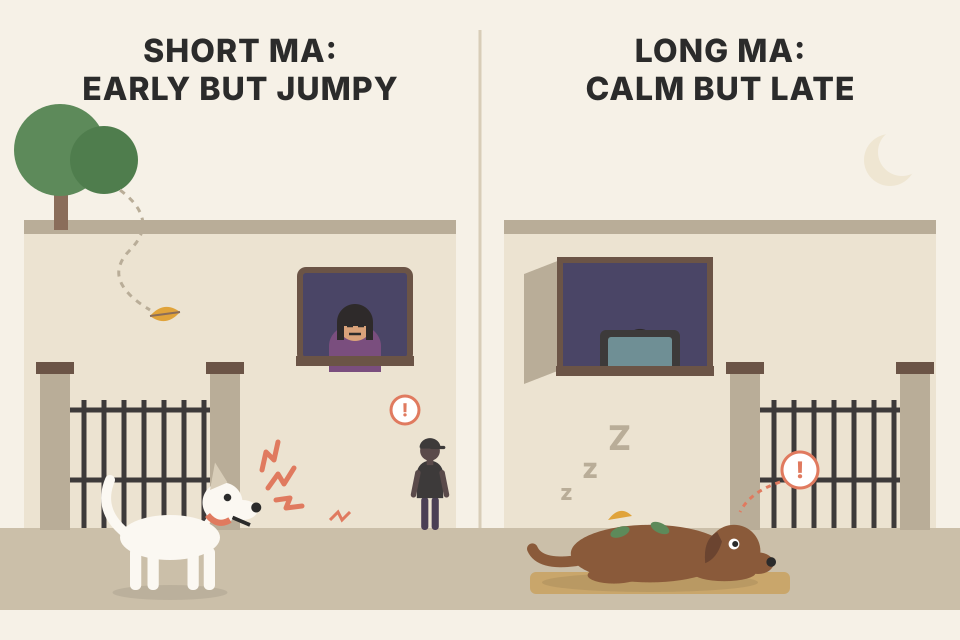
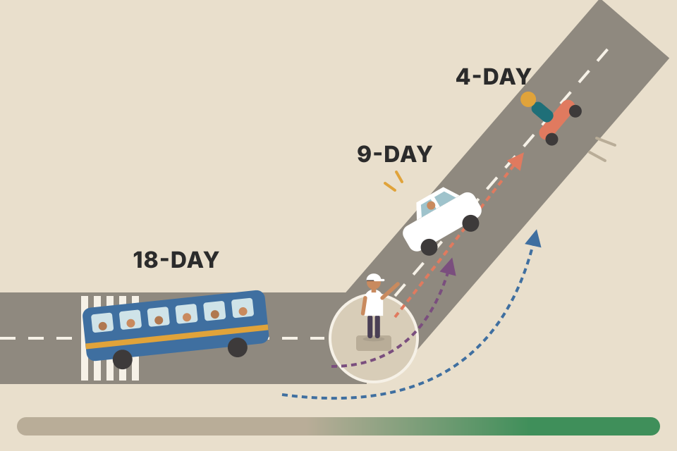
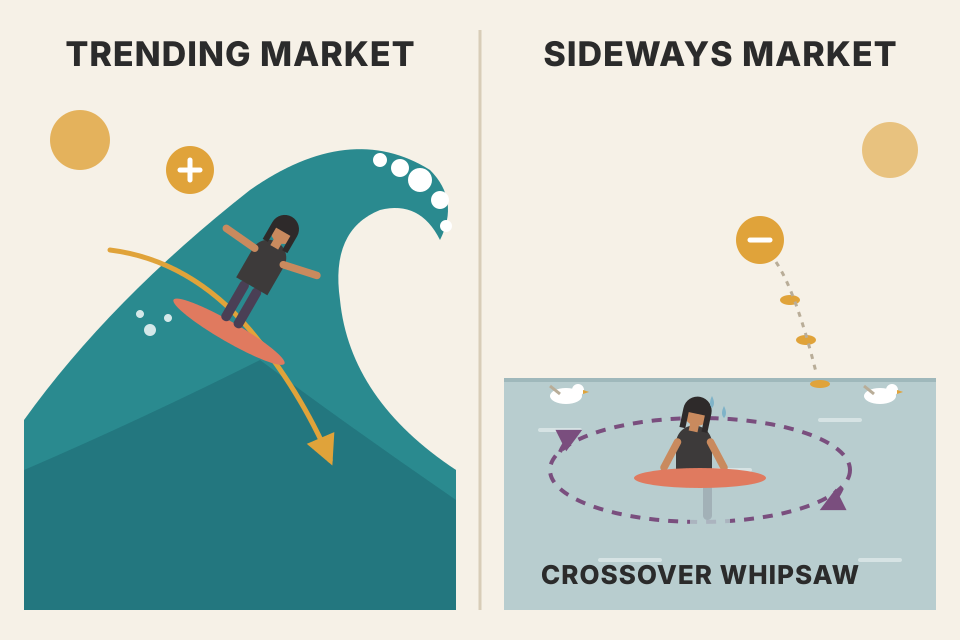

The whole chapter in plain words, in the book's order, with a live chart for every idea. Every price on this page comes from a simulated market built to show one idea clearly. Press the button to roll a fresh market and watch which conclusions survive.
Murphy builds one idea on top of the last. Keep this chain in mind; every section below is one box.
Murphy calls the moving average one of the most versatile and widely used of all technical indicators. Reading a chart by eye is subjective and hard to test, so it doesn't suit computers well. Two analysts can look at the same picture and argue whether it's a triangle or a wedge, or whether volume favours the bulls or the bears. A moving average turns "what's the trend?" into arithmetic, so a computer can follow it and produce exact buy and sell signals that nobody can argue about. Because it is so easy to quantify and test, it's the base of many mechanical trend-following systems.
Murphy then lists the open questions the chapter tries to answer. Each one maps to a section below:

Price is a dog on a lead, running left and right. The moving average is the owner walking behind it. The owner doesn't follow every sniff and zig-zag; the owner shows which way the walk is really going.
Drag the slider. At 2–5 days the line copies every wiggle. At 60–100 days it ignores the wiggles and shows only the big direction, but it turns very late. That trade-off is the whole chapter.
A 10-day moving average of closing prices: add the last 10 closes and divide by 10. Tomorrow you do it again with the newest 10 days. The group of days being averaged "moves" forward one day at a time; that's where the name comes from.
The shortcut Murphy describes: keep a running total. Each day add the new close and subtract the close from 11 days back, then divide by 10.
His Figure 9.1a puts a 10-day average on a daily S&P 500 chart: prices crossed the line several times (arrows) before finally turning higher, then stayed above it for the whole rally that followed.
Each day exactly one number enters the window and one number leaves. The average moves by (new − leaving) ÷ 10. So the MA rises when today's close is higher than the close it replaces, not simply when today is an up day. Keep this in mind; it explains the "drop-off" problem in section 05.
Murphy's running-total shortcut is exactly how software computes an SMA in constant time per day, no matter how long the window. The same function drives every SMA on this page:
Practical consequence: the first N − 1 days have no average at all. On a fresh listing (an IPO, or a newly added futures contract) a 200-day line simply doesn't exist for most of a year.
The moving average is a trend-following device. Its job is to signal that a new trend has begun or an old one has ended or reversed, and to track the trend's progress along the way. You can think of it as a curving trendline. Murphy's key sentence: the moving average is a follower, not a leader. It doesn't try to predict the way chart patterns do; it only reacts, telling you a trend has started, but only after the fact.
It is also a smoothing device: averaging gives a smoother line, so the underlying trend is much easier to see. The price of smoothing is lag. Shorter averages (20-day) hug price and react sooner; longer averages (200-day) are smoother and react later. You can shrink the lag by shortening the average, but you can never remove it. In some markets a shorter, more sensitive average works better; at other times a longer, less sensitive one is more useful.
A 20-day average is a photo made from the last 20 days. The middle of that photo is about 10 days old. So the line is always describing the market as it was roughly half a window ago.
(The formula here is not in the book.) The average age of the data inside an N-day simple average is (N − 1) ÷ 2 days. That's the lag. In the chart, the bottom is at the dashed line, and the MA keeps falling until roughly half a window later because it still contains the older, higher prices. Try N = 40: it turns about 20 days late.
price_physics_basics.md): drift grows with time, noise only with √time. A longer window lets more of the trend show through the noise, at the cost of lag.In the sideways stretch, price crosses the 20-day again and again, but stays on one side of the 200-day. The short line answers "what's happening this month?"; the long line answers "what's the main trend?"
The close is the most important price of the day and the one almost everyone averages. Some analysts use others:
The high/low band is a corridor. While price is inside the corridor, nothing has happened. A close above the corridor says "stronger than normal highs"; a close below says "weaker than normal lows". Small crossings of a single line become non-events.
The three single lines nearly overlap, so the choice of input matters much less than the choice of length. The band is different: it is a filter. It adds a buffer the price must clear before a signal counts, the same idea Murphy returns to with envelopes (09), Bollinger Bands (10) and the 4-week rule (16).
One day: high 105, low 99, close 104.
The day closed near its high, a sign of strength. The close records that fully, the H+L+C average keeps a third of it, and the midpoint ignores it entirely. Averaged over 10 or 20 days these differences mostly wash out, which is why the three lines on the chart nearly overlap. In practice: use the close unless you have a reason not to, and reach for the high/low band when you want a neutral zone that small crossings can't trigger.
The simple average (the arithmetic mean) is the one most technical analysts use. Critics raise two complaints about it:
The linearly weighted average fixes complaint 2. In a 10-day WMA the newest close is multiplied by 10, the one before by 9, and so on down to 1, then the total is divided by 55 (10 + 9 + … + 1). It still ignores everything older than 10 days, so complaint 1 stands.
The exponential average fixes both. It gives the newest day a set percentage and the old average the rest: with 10% on today and 90% on yesterday's average, today counts 10%. Murphy says that's about a 20-day average; 5% is about a 40-day average. Because yesterday's value already contains the day before, and so on, every price in the market's history is still in there, just with a weight that keeps shrinking. The user can also turn the weight up or down to make the average more or less sensitive.
Murphy's practical note: software makes all this easy. Pick the number of days (10, 20, 40…), pick the type (simple, weighted or exponential), and pick how many averages to plot (one, two or three).
The book gives only the 10% ≈ 20-day and 5% ≈ 40-day pairs; the α = 2 ÷ (N + 1) formula is the standard convention (not in the book).
Closes, oldest to newest: 100, 102, 101, 104, 110. The last day jumped. How far does each 5-day average follow it?
Read it as code: an EMA is ema += α × (close − ema). Each day it closes a fixed fraction of the gap to today's price, which is why it never needs a window and never "drops" an old day. The WMA reacts most to the 110 here because the newest close gets 5/15 = 33% of the weight; the SMA gives it only 20%. Note the EMA's starting value matters for its first few days (here it began at 100); software usually starts it from the first close or from a first SMA, and the effect fades after a few multiples of N.
(This analysis and the drop-off chart below are not in the book.) The "average age" readout is the lag from section 03. The WMA's lag is the shortest. With α = 2 ÷ (N + 1), the EMA's average age is exactly the same as an N-day SMA's. That's why that α is called the "equivalent" of an N-day average. The EMA still feels faster because it puts much more weight on the newest one or two days (look at the first bars) and has no sudden cliff at day N.
Price sits at 100 with a single one-day spike to 130. The 10-day SMA jumps 3 points when the spike enters, then drops 3 points exactly 10 days later, on a day when nothing happened. That second jump is noise created by the average itself. The EMA lets the spike fade away gradually, so there's no echo.
Murphy's Figure 9.2 shows a 40-day exponential average running more sensitively (closer to price) than the simple 40-day average on the S&P 500. The WMA is added here for comparison.
The simple average is the most common, and it's the one Murphy concentrates on from here. Some traders use just one average for trend signals. The MA is plotted on each trading day alongside that day's prices. The rule: when the close moves above the MA, buy. When prices move below it, sell. For extra confirmation, some traders also want the MA line itself to turn in the direction of the crossing. In Murphy's Figure 9.3 (Intel, 50-day average), prices fell below the line in October and the sell signal got stronger once the average itself turned down; the January buy signal was confirmed when the average turned higher.
The trade-off: a very short average (5 or 10 days) tracks prices closely and crosses them often. That means more trades (higher commissions) and many false signals (whipsaws), because short-term random noise sets off bad signals. But the shorter average also signals earlier in the move. A longer average gives fewer, later, more reliable signals. The skill is finding one sensitive enough to be early but insensitive enough to ignore most noise. Figure 9.4 compares a 10-day and a 50-day on Intel: the 10-day turned up first at the bottom, but it also gave a premature buy in November and an untimely sell in February.
One chart can mislead, so the table below runs the rule exactly as set above (your cost, the "point the same way" and long-only switches) on 40 markets built from the same recipe as the chart, and averages the results. The row for your current length is marked ◀.
Simulated, not evidence. Every market here is built as up-trend, sideways, down-trend, sideways, up-trend (about 37% sideways days, with prices pulled back toward the middle of the range), so trend followers are bound to profit on the trends; the table shows the mechanics (how trade count, quick losses and give-back change with length), not how often real markets trend. "Net" adds up each trade's % result (not compounded) after costs. "Gave back" is the drop from the first top to the day the system stopped being long, averaged only over the markets where it was long at that top (the count is shown).
Go down the rows. Trades and quick losers (trades closed at a loss within 10 days, i.e. whipsaws) fall steeply as the average lengthens: that's Murphy's "short = more false signals, more commissions". "Gave back" rises steadily with length: that's the price of the long average's late exit. Net profit is not simply better at either end; in these simulated markets at the default settings it has tended to peak around the middle lengths (20 days in the seeds I checked), which is the "sensitive enough but not too sensitive" balance Murphy describes. Move the cost slider up and watch the short lengths' net collapse first: they pay the cost on many more trades. One column may surprise you: the share of winning trades is low at every length and doesn't climb as the average lengthens. Murphy's "more reliable" means fewer false crossings (the quick-losers column), not a higher hit rate. (Observation on this simulated data, not in the book:) trend rules typically lose small on many trades and make their money on a few long ones.

A short MA is a nervous guard dog: it barks early at real burglars, but also at every leaf. A long MA sleeps through the leaves, but wakes up when the burglar is already inside.
The long average does better while the trend lasts, because it isn't shaken out by pullbacks. But because it trails far behind, it "gives back" a lot when the trend finally reverses. So: longer averages for riding a trend, shorter averages for catching a reversal. The "gave back from the top" readout measures exactly that; slide from 10 to 60 and watch it grow. On one market that can be luck; the pooled table below checks it over 40 markets. That conflict is why Murphy moves on to two averages.
breakeven_move_fyers.md) puts the break-even move at about 0.1–0.2% per intraday trade and 0.3–0.4% for delivery. Move the cost slider and watch the short MA's profit melt first.backtest_results_summary.md) weren't worth trading on any timeframe from 1-minute to weekly: the fast timeframes lost to costs, and the weekly version made 11–16%/yr but trailed simply holding the stocks. Fast signals plus costs is the same mechanism you see here.This is the double crossover method. Buy when the shorter average crosses above the longer; sell when it crosses below. Popular pairs: 5 and 20 days (popular with futures traders; in Figure 9.5 the 5-day fell below the 20-day in October and caught the entire crude-oil downtrend) and 10 and 50 days (stock traders; in Figure 9.6 the 10-day fell below the 50-day on Intel in October for a timely sell, and crossed back above in January). Using two averages lags the market a bit more than one average, but produces fewer whipsaws.
Murphy's claim: two averages lag a bit more than one but give fewer whipsaws. The table tests that on the same 40 simulated markets as section 06, with your current pair (◀), the four presets, and two single averages for comparison. Same caveats: simulated, built-in trends, summed (not compounded) % results.
Say the 5-day average is 98 and the 20-day is 100, a gap of −2. For the 5-day to move up 2 points in one day, today's close must beat the close leaving its window by roughly 5 × 2 = 10 points (a little more, because the 20-day creeps up too). A single spike rarely does that; a run of higher closes does. Meanwhile each new close moves the 20-day only 1/20 as much. That's the mechanism behind "fewer whipsaws": the fast line must travel across the slow one, and travelling takes a sustained move.
Two runners on the same track: a sprinter (fast MA) and a marathoner (slow MA). When the sprinter overtakes, momentum has turned up. When the marathoner retakes the lead, it has turned down. A single noisy day can't make the sprinter overtake; it takes several days in a row.
The bottom panel plots fast MA − slow MA. A crossover on the price chart is exactly this line crossing zero. That's the "moving averages as oscillators" idea from pdf p253: the gap between two averages swings above and below zero. Use two exponential averages (12 and 26, the usual defaults; not in this chapter) and you have the MACD line.
The most widely used triple system is the 4-, 9- and 18-day combination, used mainly in futures trading. R.C. Allen first mentioned it in his 1972 book How to Build a Fortune in Commodities, and again in his 1974 work How to Use the 4-Day, 9-Day and 18-Day Moving Averages to Earn Larger Profits from Commodities. It's a variant of the 5-10-20 numbers widely used in commodity circles. Many commercial chart services publish the 4-9-18 averages, and many charting packages use it as the default when plotting three averages.
The shortest average (4) follows the trend most closely, then the 9, then the 18. So:
Murphy's figures use the Japanese yen. Figure 9.7a shows the 9/18 pair alone (also liked by futures traders): a sell in late October when the 9 fell below the 18, and a buy in early 1998 when it crossed back above. Figure 9.7b shows all three with price bars removed: at the bottom the 4-day turns up first and crosses the other two, then the 9 crosses the 18, signalling the bottom.

Three cars leaving a junction. The nimble scooter (4) turns first; that's the alert. When the car (9) also passes the bus (18), the whole convoy has turned; that's the confirmation. Green shading = fully lined up for an uptrend, red = fully lined up for a downtrend, grey = mixed (turning or correcting).
It's a two-stage double crossover: the 4/9 and 4/18 crossings are the early, noisy layer, and 9/18 is the slower confirming layer. The grey zones are where the averages disagree. They're the transitions, which are exactly where single crossovers whipsaw. The readout measures the cost of waiting: how many days pass, on average, between an alert and the confirmation that follows it. That delay is the "price" of confirmation, paid in entry level; what it buys is skipping the alerts that never get confirmed (count them on the chart: hollow triangles not followed by a solid one).
Draw lines a fixed percentage above and below an MA. When price reaches an envelope, it has strayed unusually far from its average; the short-term move is overextended. Short-term traders often use 3% around a 21-day SMA. For long-range analysis: 5% around a 10-week or 10% around a 40-week average. In Figure 9.8a (3% around a 21-day on the daily Dow), moves outside the envelopes suggested an overextended stock market; in Figure 9.8b (5% around a 10-week on the weekly Dow), they helped identify market extremes.
The MA is a rubber band's anchor. The envelope marks how far the band normally stretches. Beyond it, the band is tight and a snap back toward the average becomes likely.
The envelope width never changes. In a calm market 3% is huge and price never reaches it; in a wild market 3% is tiny and price lives outside it. Bollinger Bands, next, fix that by letting the width follow volatility.
Murphy presents envelopes as a gauge of overextension, not a buy/sell rule. A trend follower uses them to avoid chasing: a buy signal that arrives with price already pressing the upper envelope is a late, stretched entry. A short-term trader uses a touch to take partial profits or to wait for a pullback toward the average. Pick the percentage per market: it should be wide enough that only the extremes reach it (the readout counts how often closes land outside).
John Bollinger's version: put the bands two standard deviations above and below a moving average, usually 20 days. A standard deviation measures how spread out prices are around their average; the book says two standard deviations ensure 95% of the price data falls between the bands. As a rule: touching the upper band = overextended up (overbought); touching the lower band = overextended down (oversold).
Figure 9.9a (daily Dow, 20-day average): in the sideways August–January stretch prices kept touching the outer bands; once the uptrend resumed they traded between the upper band and the 20-day. Figure 9.9b (weekly Dow, 20-week average): each touch of the lower band marked an important bottom and a buying opportunity.
The bands are the walls of a tunnel that the market pushes on. When the market gets loud, the walls move apart; when it goes quiet, they squeeze in. A long squeeze is a spring being compressed (the shaded "squeeze" zones). Something usually breaks out of it.
Width = 2 × k × (standard deviation of the last N closes). The book says two standard deviations hold 95% of prices. (Not in the book:) that figure assumes a bell-curve. Real prices trend and have fat tails, so the share inside is usually lower. Check the readout. Murphy treats the touches as overextension, not automatic reversal signals.
Five closes 98, 99, 100, 101, 102 (a 5-day window to keep it short). Then the same 20-day average of 100 in a calm and a wild market, next to a fixed 3% envelope.
Same price, opposite readings. In the wild market a 4-point move is ordinary, and the bands know it; the envelope doesn't. (This page divides by N when computing σ, as most charting software does for Bollinger Bands; dividing by N − 1 makes the bands slightly wider. Not in the book.)
trading_equations.md): Bollinger width is a rolling σ drawn on the chart, a cousin of ATR and GARCH forecasts.Statistically, an average belongs in the middle of the period it covers: a 10-day average plotted 5 days back, a 20-day plotted 10 days back. That's the "centered" average. Traders don't use it because it gives much later trend-change signals; it's used almost only by cycle analysts to isolate cycles. Normally the MA is plotted at the end of its period.
The centered line hugs price beautifully, with no lag. But look at the right edge: it stops (N − 1) ÷ 2 days before today (shaded zone), because those values need future prices. (Murphy rounds the shift to N ÷ 2, e.g. 5 days for a 10-day average; the exact middle of a 10-day window is 4.5 days back.) The missing stretch is exactly the lag from section 03. Lag isn't a flaw you can fix; it's the price of only knowing the past.
Many analysts believe markets move in repeating time cycles. Because cycles repeat and can be measured, they could help estimate when tops and bottoms will occur. Many cycles run at the same time, from a short 5-day cycle up to Kondratieff's 54-year cycle (Murphy covers cycles in Chapter 14). He raises cycles here only to make one point: there seems to be a link between a market's underlying cycles and the right average to use, so averages can be adjusted to fit each market's dominant cycles.
One of the best-known cycles in the commodity markets is the monthly cycle: a month has 20–21 trading days. Cycles tend to be harmonic: the next longer cycle is double, the next shorter is half. That may explain the popularity of 5, 10, 20 and 40-day averages: the 20-day measures the monthly cycle, the 40 doubles it, the 10 halves it and the 5 halves it again. Many common averages, including 4-9-18 (derived from 5-10-20), can be explained this way. The 4-week cycle may also explain the success of the 4-week rule and its shorter cousin, the 2-week rule (section 16).
Fibonacci numbers (13, 21, 34, 55…) also seem to work well as averages, on daily and weekly charts alike: the 21-day average is a Fibonacci number, and on weekly charts the 13-week average has proven valuable in both stocks and commodities. More on Fibonacci in the Elliott Wave chapter (Chapter 13).
Average a wave over exactly one full wave and the ups cancel the downs: the wave disappears and only the trend is left. Set the MA days equal to the cycle length (try 20 and 20), then try half (10) and double (40).
(This filtering math is not in the book.) An N-day SMA completely removes any cycle whose length is exactly N (or N/2, N/3…), because each window holds whole waves. Shorter cycles mostly vanish too; longer cycles pass through. So choosing the MA length is choosing which cycles to ignore. Murphy's harmonic rule (×2, ÷2) gives you a family of lengths that each silence one cycle.
Flat price of 100 with a 4-day wave on top: 102, 100, 98, 100, 102, 100, 98, 100…
Practical use: if you believe a market has a strong 20-day rhythm, a 20-day (or 40-day) average will ignore it and show the trend underneath, while a 10-day average will still wiggle with it and keep crossing price.
Don't skip long-range analysis. 10- or 13-week averages together with the 30- or 40-week average have long been used in stock market analysis (less so in futures). The 10 and 40-week pair can help track the primary trend on weekly charts, for futures and stocks alike. In Figure 9.10 the 40-week average provided support during bull-market corrections.
A week is 5 trading days, so 10 weeks ≈ 50 days and 40 weeks ≈ 200 days. The famous 200-day average is the 40-week line drawn on a daily chart. On a weekly chart each bar already smooths a week of noise, so the same length covers a much longer stretch of time.
backtest_results_summary.md): the 200-day market filter was the one consistent winner (+0.26 Sharpe, −8 points of drawdown). Your best swing strategy, the weekly pullback, uses close > 50-week > 200-week averages with dips to the 20-week EMA.Pros: MA systems obey the oldest maxims of trading. They trade with the trend, let profits run and cut losses short, and they force you to follow those rules with specific signals.
Cons: they work best in trending markets and very poorly in choppy, sideways ones, which Murphy estimates at a third to a half of the time. So it's dangerous to rely on them alone. In some trending markets the MA "can't be beat"; at other times a non-trending tool like an overbought/oversold oscillator is better. Murphy points to ADX (Chapter 15) as a way to tell whether a market is trending, and so whether it favours a trending MA approach or a non-trending oscillator.
MAs as oscillators: one way to build an oscillator is to take the difference between two MAs, which gives the double crossover method even more weight. One version, comparing two exponential averages, is Moving Average Convergence/Divergence (MACD), used partly as an oscillator and explained in Chapter 10 (see section 07 above).
How the readouts are measured (beyond the book): each day's profit or loss of the position held into that day is credited to that day's kind (trend or sideways), and the cost of each closed trade is charged to the day it was closed. So a trade that starts in a range and then rides the next trend is split fairly between the two. The second readout repeats this on the same 40 simulated markets as section 06 and counts how many of them lost money on their sideways days. Simulated markets with built-in sideways stretches: this shows the mechanism, not how much of real-market time is sideways.

A surfer. In waves (trends) the board flies. On a flat sea (sideways) the surfer paddles in circles and gets tired. The shaded bands show when this simulated sea was flat. The profit bars in the chart's lower panel show where a 10/30-day crossover (an example pair, not one of Murphy's) earned and where it bled.
In a range, price keeps crossing back over the average, so every signal arrives just in time to be wrong (buy near the top of the range, sell near the bottom), and each costs a fee. Nothing inside the MA can tell trend from range; you need another tool (ADX, Efficiency Ratio in section 19, or an oscillator).
A moving average works on almost any series: volume, open interest, on-balance volume, ratios, other indicators, even oscillators. It smooths that series and shows its trend just as it does for price.
Example (simulated volume): a 20-day average of volume. A bar far above the line flags unusual activity, the "relative volume" filter (RVOL ≥ 2) used in your 5-minute opening-range-breakout tests (backtest_results_summary.md). MACD's signal line is another example (not in this chapter): a 9-day EMA of the MACD line.
An alternative to the MA with most of its benefits, but less time-consuming and simpler to use: the weekly price channel, or simply the weekly rule. Murphy sets the scene: as computers improved, research into mechanical trading systems (no human emotion or judgement) grew more sophisticated. First came simple moving averages, then double and triple crossovers, then linearly weighted and exponentially smoothed averages, all trend-following. In the rush to fancier systems, simpler techniques that still work and have stood the test of time tend to be overlooked.
In 1970, a booklet called the Trader's Notebook, published by Dunn & Hargitt's Financial Services in Lafayette, Indiana, computer-tested and compared the best-known commodity systems of the day. The most successful was the 4-week rule by Richard Donchian, a recognised pioneer of mechanical commodity trend trading. (In 1983, Managed Account Reports made Donchian the first winner of its Most Valuable Performer Award for contributions to futures money management, and now presents The Donchian Award.)
Later work by Louis Lukac (former research director at Dunn & Hargitt, then president of Wizard Trading, a Massachusetts CTA) agreed that breakout (channel) systems like the weekly rule keep showing superior results. Of 12 systems tested on 1975–84 data, only 4 made significant profits; 2 of those were channel breakouts and one was a dual moving average crossover. A later article by Lukac and Brorsen in The Financial Review (November 1990) compared 23 systems on 1976–86 data, and again channel breakouts and moving average systems came out on top. Lukac's personal choice for the best starting point for any trading-system testing and development: a channel breakout system.
The 4-week rule is used mainly for futures trading, and it's about as simple as a system gets:
Simulated data. The chart uses a rolling 20-trading-day window as a stand-in for "4 full calendar weeks" (1 wk = 5 days, 8 wk = 40 days), and enters on a close beyond the channel.
The rule is fully testable, so test it one trade at a time. Each step zooms in on one closed trade from the chart above (same settings): the entry where price closed through the channel, the initial stop (with the 2-week exit on, that's the 2-week low or high at entry, Murphy's protective-stop example; with it off, it's the opposite side of the entry channel, which is also where the position reverses), the stop line as it trails, and the exit. There is no profit target: the rule lets profits run until the stop or an opposite breakout takes you out.
Same 40 markets as section 06, with the exit and long-only switches set above. Compare the trade counts with the moving-average tables in sections 06 and 07.
Simulated, with trends built in, so this is not evidence the rule has an edge in real markets. What it does show: the channel trades far less often than a short moving average and has few quick losers, which is the mechanism Murphy credits for its strong test results.
The channel is a room whose ceiling is the highest high of the last 4 weeks and whose floor is the lowest low. While the market paces around the room, do nothing. It only matters when the market walks through the ceiling or the floor; that's a new trend announcing itself.
An MA asks "where is price compared with its average?" The channel asks "is price doing something it hasn't done for 4 weeks?" Both are trend followers, but the channel ignores everything inside the room, so it has no small crossings and trades far less. That built-in filter (like the high/low band in section 04) is why it holds up so well.
backtest_results_summary.md) made 13–18%/yr but was no better than holding the same stocks. A 4-week entry / 2-week exit version with a 200-day filter isn't in that summary: a good next project.The book's first edition included extensive Merrill Lynch research: a series of studies of computerised trading techniques on the futures markets from 1978–82. They tested many moving average and channel breakout settings to find the best combination for each futures market, and ended up with a different set of optimised values for each market. Most charting software can do this for any indicator, and for daily and weekly breakout systems too: ask it which length or combination worked best in the past for this market. Optimisation lets parameters adapt to changing market conditions.
Some say optimisation helps their results, others say it doesn't. The debate is about how you optimise. Researchers stress the correct way: pick the best settings on one part of the data, then test them on a different part they've never seen ("out of sample"). Results on unseen data are closer to what real trading would give. Murphy calls the decision a personal one, but says most evidence suggests optimisation isn't the Holy Grail some think it is. He advises traders who follow only a handful of markets to experiment with it (why should Treasury Bonds or the German mark use exactly the same averages as corn or cotton?). Stock traders are a different story: following thousands of stocks argues against it. Specialists in a few markets: try optimising. Generalists following many: use the same settings for all of them.
Studying last year's exam paper until you score 100%, then sitting a new paper. The orange curve is last year's paper (first half of the data); the teal curve is the new paper (second half). The second readout pools 40 simulated markets so you can see how far the in-sample winner usually falls, rather than trusting one market. Simulated data, not evidence about real markets.
Each length's past profit is part real edge and part luck. Picking the maximum of many lucky numbers mostly picks the luck, so the winner usually falls back on new data. Roll a few markets and watch the "best in-sample" length land in different places each time.
backtest_results_summary.md) already work this way: the weekly pullback passed because all 8 settings were profitable out-of-sample, while the 15-minute ORB "best setting" collapsed on the Nifty 200 re-check.Most technicians use two averages, usually simple ones. Exponential averages are popular, but there's no real evidence they work better than simple ones.
| Who | Common settings | Notes |
|---|---|---|
| Futures, daily | 4 & 9 · 9 & 18 · 5 & 20 · 10 & 40 | double crossovers |
| Stock traders | 50-day (= 10-week) | the one they rely on most |
| Long-range stocks | 30 & 40-week (40w ≈ 200-day) | primary trend |
| Bollinger Bands | 20-day · 20-week | 20 weeks on a daily chart ≈ 100-day |
| Channel breakouts | daily · weekly · monthly | work extremely well in trending markets |
The fast-or-slow dilemma: a fast average whipsaws in trading ranges, while a slow one trails far behind in trends. Perry Kaufman's Adaptive Moving Average (AMA), from his book Smarter Trading, adjusts its speed to the market's noise: it slows down when the market goes sideways and speeds up when it trends. It does this with an Efficiency Ratio that compares direction with volatility. High ER (more direction than noise) → faster average; low ER (more noise than direction) → slower average.
Eleven closes give ten daily changes: 100, 101, 100, 102, 101, 103, 102, 104, 103, 105, 104.
So the same line runs anywhere from a very fast to an almost frozen average, decided day by day by how straight the last 10 days were. Squaring α is what makes the slow end so slow: in chop the AMA barely moves, so price crossing it means little and the line itself stays flat, which is the signal to stand aside.
A string pulled between two points. Pull it straight (trend): its length equals the distance, ER = 1, and the AMA runs like a fast average. Let it zig-zag (chop): lots of string for little distance, ER near 0, and the AMA nearly freezes, which is exactly when you want it to ignore crossings.
projects/trading experiments/supertrend_di_backtest.py). Your notes (murphy_moving_averages.md, intraday_swing_playbook.md) record that it still lost to costs on short timeframes: an adaptive filter reduces whipsaws but can't create an edge that isn't there.Moving averages don't work all the time. They do their best work in trending phases and aren't much help in sideways, trendless periods. For those frustrating trading ranges, another class of indicator works much better: oscillators, the subject of Chapter 10 (pdf p266).
| Murphy says | Your own backtests found (backtest_results_summary.md) |
|---|---|
| MAs fail in sideways markets (⅓–½ of the time) | MACD crossover (an MA-gap signal) was not worth trading on any timeframe, 1-minute to weekly |
| The 40-week / 200-day average tracks the primary trend | The 200-day market filter was the one consistent winner (+0.26 Sharpe, −8 pts drawdown) |
| Longer averages ride trends; weekly charts matter | Weekly pullback (50w/200w trend, 20-week EMA dip) made 18.5–26%/yr; no intraday strategy passed |
| Efficiency Ratio slows the average in chop | Adaptive SuperTrend (same ER) still lost to costs on short timeframes |
| Channel breakouts are among the best systems | Daily breakout 13–18%/yr, but no better than holding; 4-week/2-week version untested |
| Optimise on one part, test on another | Weekly pullback passed out-of-sample; 15-min ORB's best setting failed the re-check |
No. Its data has an average age of about 9.5 days, so it describes the market as it was roughly 10 days ago. Lag is built in (section 03).
The MA moves by (today − the close that left the window) ÷ 10. If the day leaving was higher than today, the average falls even on an up day (section 02).
A big old price just dropped out of the window: the drop-off echo. The EMA avoids it because no day ever leaves suddenly (section 05).
No single length does both: long for riding, short for reversing (Murphy's corollary). That's why he moves to two or three averages, or a channel with a shorter exit (sections 06–08, 16).
They're the same event. MACD = EMA12 − EMA26 (the standard settings, covered in Chapter 10), so the fast EMA crossing the slow one is MACD crossing zero (sections 07, 14).
A new trend may be about to start; low volatility tends to be followed by expansion (section 10).
A 20-day SMA (40 and 60 work too). A 10-day window holds only half a wave, so a lot of the 20-day cycle survives. An N-day SMA removes cycles whose length divides N exactly: N, N/2, N/3… (section 12).
Buy above the highest high of the last 4 full weeks, sell short below the lowest low. Fix: enter on 4-week breaks, exit on a 1- or 2-week opposite break and wait (section 16).
Murphy: no. Generalists following many markets should use the same parameters for all (section 17).
Fast: price is moving almost in a straight line, so the AMA speeds up toward the fast setting (section 19).
Only a buying alert. The confirmed buy comes when the 9-day then crosses above the 18-day (section 08).
Envelopes stay a constant percentage from the average (often 3% around a 21-day); Bollinger Bands widen and narrow with the last 20 days' volatility (sections 09, 10).
Only 4. Two were channel breakout systems and one was a dual moving average crossover (section 16).
Envelope: yes, 104 is above 103. Bollinger: no, the bands are 94–106, so a 4-point move is normal for this volatility. That's the "one major difference" made concrete (sections 09, 10).
Just under the low of the past 2 weeks, trailed (tightened to a 1-week stop after a sharp rally). There is no target: the rule lets profits run until the stop or an opposite breakout ends the trade (section 16).